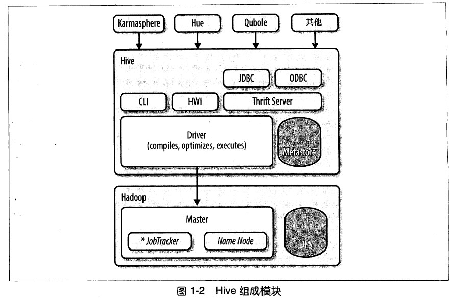

Hive提供了一个被称为Hive查询语言(简称HiveQL或HQL)的SQL方言，来查询存储在Hadoop集群中的数据。
Hive可以将大多数的查询转换为MapReduce任务。
Hive最适合数据仓库应用程序。使用该应用程序进行相关的静态数据分析,不需要快速响应给出结果,且数据本身不会频繁变化。
Hive不是一个完整的数据库。Hadoop以及HDFS的设计本身约束和局限性的限制了Hive所能胜任的工作。最大的限制就是Hive不支持记录级别的更新、插入和删除。但用户可以通过查询生成新表或者将查新结果导入到文件中。
Hive查询延时比较严重。
Hive不支持事务。
Hive不符合ANSI SQL标准,和关系型数据库支持的常规SQL方言存在很大差异。HiveQL和MySQL的方言最接近。

Hive发行版中附带的模块有:
CLI Hive命令行接口
HWI 简单网页界面
JDBC、ODBC
Thrift
所有的命令和查询都会进入到Driver(驱动模块),通过该模块对输入进行解析编译,对需求计算进行优化,然后按指定步骤执行(通常是启动多个MapReduce任务)。当需要启动MapReduce任务时,Hive自身不会生成Java MapReduce算法程序。而是使用一个表示"job执行计划"的XML文件驱动执行内置的、原生的Mapper和Reducer模块。通俗讲,该驱动的"语言"是以XML形式编码的。
Hive使用jobtrack通信来初始化MapReduce任务。不必部署在jobtrack所在的管理节点上。
Metastore(元数据存储)是一个独立的关系型数据库(通常是一个MySQL实例),Hive在其中保存表模式和其他系统元数据。
Hive最适合用来做数据仓库,对于数据仓库程序不需要实时响应查询,不需要记录级别的插入、更新和删除。
Pig是由Yahoo!开发的。Hive是由facebook开发的。
Pig被描述成一种数据流语言,而不是一种查询语言。在Pig中,需要写一系列的声明语句来定义某些关系和其他关系之间的联系,每个新的关系都会执行新的数据转换过程。Pig会查找这些声明,创建一系列有序的MapReduce任务,对这些关系进行转换,直到产生预期的结果。
Pig的缺点就是所使用的语言不是基于SQL的。
Hbase是一个分布式的、可伸缩的数据存储。支持行级别的数据更新,快速响应及行级事务(不支持多行事务)
Hbase支持的一个重要特性就是列存储,其中的列可以组织成列族。
可以像使用键值一样来使用Hbase。
package org.myorg;
import java.io.IOException;
import java.util.*;
import org.apache.hadoop.fs.Path;
import org.apache.hadoop.conf.*;
import org.apache.hadoop.io.*;
import org.apache.hadoop.mapreduce.*;
import org.apache.hadoop.mapreduce.lib.input.FileInputFormat;
import org.apache.hadoop.mapreduce.lib.input.TextInputFormat;
import org.apache.hadoop.mapreduce.lib.output.FileOutputFormat;
import org.apache.hadoop.mapreduce.lib.output.TextOutputFormat;
public class WordCount {
public static class Map extends Mapper<LongWritable, Text, Text, IntWritable> {
private final static IntWritable one = new IntWritable(1);
private Text word = new Text();
public void map(LongWritable key, Text value, Context context)
throws IOException, InterruptedException {
String line = value.toString();
StringTokenizer tokenizer = new StringTokenizer(line);
while (tokenizer.hasMoreTokens()) {
word.set(tokenizer.nextToken());
context.write(word, one);
}
}
}
public static class Reduce extends Reducer<Text, IntWritable, Text, IntWritable> {
public void reduce(Text key, Iterable<IntWritable> values, Context context)
throws IOException, InterruptedException {
int sum = 0;
for (IntWritable val : values) {
sum += val.get();
}
context.write(key, new IntWritable(sum));
}
}
public static void main(String[] args) throws Exception {
Configuration conf = new Configuration();
Job job = new Job(conf, "wordcount");
job.setOutputKeyClass(Text.class);
job.setOutputValueClass(IntWritable.class);
job.setMapperClass(Map.class);
job.setReducerClass(Reduce.class);
job.setInputFormatClass(TextInputFormat.class);
job.setOutputFormatClass(TextOutputFormat.class);
FileInputFormat.addInputPath(job, new Path(args[0]));
FileOutputFormat.setOutputPath(job, new Path(args[1]));
job.waitForCompletion(true);
}
}
CREATE TABLE docs (line STRING);
LOAD DATA INPATH 'docs' OVERWRITE INTO TABLE docs;
CREATE TABLE word_counts AS
SELECT word, count(1) AS count FROM (SELECT explode(split(line, '\s')) AS word FROM docs) w
GROUP BY word
ORDER BY word;